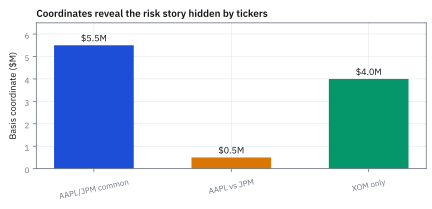
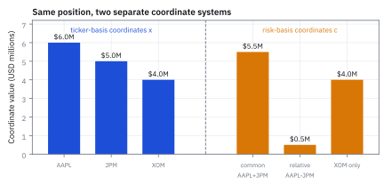

3.3 Basis
เลือกชุดลูกศรที่สร้างพื้นที่ทั้งหมดโดยไม่ซ้ำซ้อน
พอร์ตถือ AAPL \$6 ล้าน, JPM \$5 ล้าน และ XOM \$4 ล้าน ถ้าเขียนสองหุ้นแรกใหม่เป็น ขาที่ไปด้วยกัน บวก ขาที่สวนกัน แต่ละขาใหญ่เท่าไร?
เฉลย: ขาไปด้วยกัน 5.5 คือถือ AAPL และ JPM ข้างละ \$5.5 ล้าน ขาสวนกัน 0.5 คือ AAPL +0.5M กับ JPM −0.5M เพราะ 5.5 + 0.5 = 6 และ 5.5 − 0.5 = 5 ส่วน XOM คง 4 พอร์ตไม่เปลี่ยนเลย เปลี่ยนแค่แกนที่ใช้อ่าน
Basis คือชุด vector ที่ไม่ซ้ำกันและผสมแล้วสร้างทุกจุดในพื้นที่ได้ quant ใช้ย่อ risk factor หรือแทน portfolio ด้วยพิกัดที่ควบคุมได้
ศัพท์ที่ใช้ในหัวข้อนี้
- basis
- ชุดของ linearly independent vectors ที่ span พื้นที่ exposure ทั้งหมด ใช้เป็นภาษาพิกัดเพื่ออธิบาย portfolio เดิมในมุมที่ช่วยตัดสินใจได้
- coordinate
- coefficient ของ basis vector แต่ละตัว ใช้บอกว่า portfolio ประกอบจาก risk direction นั้นมากน้อยเพียงใด
- canonical basis
- basis มาตรฐานที่แต่ละ vector มี 1 หนึ่งตำแหน่งและ 0 ที่เหลือ ใช้แทนการถือสินทรัพย์ทีละชื่อโดยตรง
- change of basis
- การเขียน vector เดิมด้วย coordinates ของ basis ชุดใหม่ ใช้แปลงรายชื่อ position เป็น factor exposure โดยไม่เปลี่ยน P&L ของ portfolio
- factor
- driver ร่วมที่ทำให้สินทรัพย์หลายตัวเคลื่อนไหวไปทางเดียวกัน ใช้รวม risk ที่กระจายอยู่ตาม ticker ให้เห็นเป็นไม่กี่ก้อนที่ hedge ได้
- liquidity
- ความสามารถในการซื้อหรือขาย instrument ได้ตามขนาดที่ต้องการโดยไม่ทำให้ราคาเคลื่อนมาก ใช้ตัดสินว่า risk direction ใน basis มี hedge ที่ลงมือทำได้จริงหรือมีเพียงชื่อสวยบน dashboard
- chief investment officer (CIO)
- ผู้บริหารที่รับผิดชอบภาพรวมการลงทุนและ risk ขององค์กร ใช้กำหนด mandate จัดสรร risk budget และตัดสินใจว่า exposure ใดควรถือหรือ hedge
สัญลักษณ์ที่ใช้ในหัวข้อนี้
| สัญลักษณ์ | ความหมาย | หน่วย |
|---|---|---|
| $\mathbf{x}$ | vector exposure ของ portfolio เดียวกันในสินทรัพย์ดั้งเดิม | USD millions |
| $\mathbf{e}_i$ | canonical basis vector ตัวที่ $i$ | ไม่มีหน่วย |
| $\mathbf{b}_i$ | basis vector ใหม่ที่แทน risk direction หรือ factor | ไม่มีหน่วย |
| $c_i$ | coordinate หรือขนาดของ basis vector $\mathbf{b}_i$ | USD millions |
| $B$ | matrix ที่วาง basis vectors เป็น columns | ไม่มีหน่วย |
| $\mathbf{c}$ | column vector ของ coordinates ใน basis ใหม่ | USD millions |
ที่มาที่ไป: แกนที่เราคุ้นเคย ไม่ใช่แกนเดียวที่ใช้ได้
โดยปกติเราอธิบายพอร์ตด้วยการบอกว่าถือหุ้นตัวไหนเท่าไร ซึ่งเป็นการเลือกแกนแบบหนึ่ง และเป็นแกนที่ตรงกับวิธีบันทึกบัญชี
แต่แกนนั้นแย่มากสำหรับการเข้าใจความเสี่ยง เพราะหุ้นห้าร้อยตัวขยับพร้อมกันเกือบตลอด การดูทีละตัวจึงเห็นแต่เรื่องเดียวกันซ้ำห้าร้อยรอบ
แนวคิดของหัวข้อนี้คือเราเลือกแกนใหม่ได้ โดยที่ความเสี่ยงจริงไม่เปลี่ยน เปลี่ยนแค่ภาษาที่ใช้อธิบาย และถ้าเลือกแกนดี ๆ เรื่องที่ซ้ำกันห้าร้อยรอบจะยุบเหลือไม่กี่ทิศ
ความคิดนี้เป็นรากของทั้งแบบจำลองปัจจัย และของการลดมิติในหัวข้อ 17.4
ประวัติความเป็นมา: จากพิกัดเดส์การ์ตสู่การแปลงแกนปัจจัยในตลาดการเงิน
จุดเริ่มต้นของระบบพิกัดต้องย้อนไปถึง René Descartes ในปี ค.ศ. 1637 ที่เสนอแกนตั้งฉากแบบคาร์ทีเซียน (Cartesian coordinates) ในหนังสือ La Géométrie เป็นเวลากว่าสองร้อยปีที่นักคณิตศาสตร์และนักวิทยาศาสตร์ยึดติดว่าพิกัดต้องผูกกับแกนคงที่ตั้งฉากกันในอวกาศสามมิติเท่านั้น จนกระทั่ง Hermann Grassmann และ Giuseppe Peano ในช่วงปลายศตวรรษที่ 19 ได้พิสูจน์ว่าแกนไม่จำเป็นต้องตั้งฉาก และไม่จำเป็นต้องมีเพียงสามมิติ
ขอเพียงกลุ่มของ vector มี linear independence และครอบคลุมปริภูมิทั้งหมด กลุ่ม vector นั้นย่อมทำหน้าที่เป็น basis ได้ทันที ตัววัตถุหรือจุดในปริภูมิไม่ได้เปลี่ยนไปตามภาษาที่เราเลือกบรรยาย การเปลี่ยนแกนจึงเป็นเพียงการคูณด้วย matrix ผกผัน
ในโลกการเงิน ทฤษฎี factor model ในช่วงทศวรรษ 1970 ถึง 1990 ได้นำแนวคิดเรื่อง basis มาใช้อย่างกว้างขวาง โดยเปลี่ยนจากการมองพอร์ตบนแกนชื่อหุ้นรายตัวหลายพันตัว ไปเป็นการมองบน basis ของปัจจัยความเสี่ยงส่วนกลาง เช่น ขนาดและมูลค่า ทำให้ผู้จัดการกองทุนสามารถควบคุมความเสี่ยงรวมได้อย่างมีประสิทธิภาพ
แล้วเอาไปใช้ทำอะไรได้จริงบ้าง
การเลือกชุดแกนที่เหมาะ ทำให้ปัญหาที่ดูยุ่งกลายเป็นเรื่องง่ายทันที
ใช้เปลี่ยนมุมมองความเสี่ยงจากรายตัว ไปเป็นความเสี่ยงตามปัจจัย เช่นแทนที่จะดูหุ้นสองร้อยตัว ก็ดูแค่ความเสี่ยงต่อตลาด ต่อขนาดบริษัท และต่อมูลค่า
ใช้ในงานพันธบัตร ที่แทนการดูอายุทุกช่วง ด้วยการดูแค่สามทิศคือระดับ ความชัน และความโค้ง ซึ่งเราจะสร้างมันเองในหัวข้อ 17.4
ใช้ลดจำนวนตัวเลขที่ต้องประมาณ ซึ่งเป็นเหตุผลเชิงปฏิบัติที่สำคัญที่สุด
Figure 3.3a — พอร์ตเดียวกัน อ่านได้สองระบบพิกัด

จุดสีน้ำเงินคือ portfolio เดิมและไม่ขยับ สิ่งที่เปลี่ยนมีเพียงแกนพิกัด: ticker coordinates ตอบว่า “เราถืออะไร” ส่วน factor coordinates ตอบว่า “อะไรจะทำให้หลาย position เจ็บพร้อมกัน”
เริ่มจากภาษาของ positions
สมมติ $\mathbf{x}$ วัดเป็น USD millions ตามลำดับ AAPL, JPM, XOM canonical basis เหมาะกับการส่ง order และ reconcile custodian เพราะ coordinate หนึ่งตัวตรงกับหุ้นหนึ่งชื่อ แต่ไม่ช่วยตอบว่า sector shock จะกระทบก้อนใดพร้อมกัน
ขั้นที่ 1 — เขียน exposure ใน canonical basis
ปกติเราเขียนความเสี่ยงในหน่วยของสินทรัพย์แต่ละตัว ซึ่งเป็นการเลือกแกนแบบหนึ่ง แต่ไม่ใช่แกนเดียวที่ใช้ได้
$\mathbf{x}$ คือ exposure รวมของ portfolio หน่วย USD millions $\mathbf{e}_1,\mathbf{e}_2,\mathbf{e}_3$ คือ canonical basis สำหรับ AAPL, JPM, XOM ตามลำดับ coefficients 6, 5, 4 บอกว่าถือ long มูลค่า $6M,\$5M,\$4M$ จึงรวมเป็น $15M$
ขั้นที่ 2 — เขียน basis ชุดใหม่ของ risk directions
แกนชุดใหม่จะใช้ได้ต้องมีสองสมบัติ คือไม่ซ้ำกันเอง และครอบคลุมทุกทิศที่เป็นไปได้
แต่ละ column ของ $B$ คือ risk direction หนึ่งแบบ: AAPL กับ JPM ไปทางเดียวกัน, AAPL สวนกับ JPM, และ XOM เดี่ยว ๆ
$\mathbf{c}$ บอกว่าต้องผสมแต่ละ direction มากแค่ไหนเพื่อประกอบกลับเป็น portfolio เดิม $\mathbf{x}$
ตรวจสอบเงื่อนไข Basis: คำนวณ Determinant เพื่อยืนยันว่าแกนไม่ซ้ำซ้อน
ค่า determinant ที่ไม่เท่ากับศูนย์เป็นหลักประกันว่า columns ของ $B$ ไม่มีทิศทางใดทับซ้อนกัน จึงรับประกันว่า $B$ สามารถกลับค่า (invertible) ได้ และทุกพอร์ตสามหุ้นจะมีพิกัดบน basis นี้เสมอ
ก่อนจะนำชุด vector ใด ๆ มาใช้เป็น basis ต้องตรวจสองคุณสมบัติคือเป็นอิสระต่อกันและแผ่คลุมมิติได้ครบ สำหรับ matrix จัตุรัสขนาด $3\times 3$ สองเงื่อนไขนี้ยุบรวมเหลือการตรวจสอบ determinant เพียงค่าเดียว
กระจายตามแถวแรก พจน์แรกได้ผลคูณทแยง $-1$ พจน์ที่สองลบด้วย $1$ รวมกันได้ $-2$ ซึ่งไม่เท่ากับศูนย์ ยืนยันว่าทั้งสามคอลัมน์ไม่ซ้ำซ้อนและเป็น basis ที่ถูกต้องของพื้นที่ 3 มิติ
ขั้นที่ 3 — ทำไมพิกัดในแกนชุดหนึ่งมีได้ชุดเดียว
สองสมบัติของแกนชุดใหม่ในขั้นที่ 2 ทำงานคนละหน้าที่ ความครอบคลุมรับประกันว่าเขียนได้ ส่วน linear independence รับประกันว่าเขียนได้แบบเดียว ข้อหลังนี่เองที่ทำให้พูดคำว่าพิกัดของพอร์ตได้
ถามคำถามที่ดูเหมือนไม่จำเป็นก่อน ถ้าเขียนจุดเดิมด้วยแกนชุดเดียวกันสองครั้ง จะได้ตัวเลขชุดเดียวกันเสมอไหม ถ้าไม่ ภาษาที่เราเพิ่งสร้างขึ้นก็กำกวม และทั้งหัวข้อนี้ก็ใช้ไม่ได้
วิธีตอบคือสมมติไปเลยว่ามีสองชุด แล้วลบกัน ผลต่างกลายเป็นการผสมแกนที่ได้ผลลัพธ์เป็นศูนย์
ตรงนี้เองที่ linear independence ทำงาน นิยามของมันในหัวข้อ 3.2 บอกว่าการผสมที่ได้ศูนย์ มีทางเดียวคือตัวคูณทุกตัวเป็นศูนย์ ผลต่างทุกตัวจึงเป็นศูนย์ และสองชุดนั้นคือชุดเดียวกัน
นั่นคือเหตุผลที่การเปลี่ยนแกนในขั้นถัดไปไม่ทำให้ความเสี่ยงเปลี่ยน มันเปลี่ยนแค่ตัวเลขที่ใช้เรียกจุดเดิม และตัวเลขชุดนั้นมีได้ชุดเดียวเท่านั้น
ขั้นที่ 4 — หา coordinates ใหม่ด้วยการแก้สมการสามบรรทัด
ไม่ต้องกลับ matrix เลย สามสมการนี้แก้ด้วยมือได้: บวกสองบรรทัดแรกให้ $c_2$ หายไป แล้วแทนกลับ ตัวเลขเปลี่ยนแต่ความเสี่ยงจริงเท่าเดิม เปลี่ยนแค่ภาษาที่ใช้อธิบาย
$c_1=5.5$ หมายถึงถือ AAPL และ JPM ข้างละ \$5.5 ล้าน ตามทิศ “ไปด้วยกัน” ไม่ใช่เงินก้อนรวม \$5.5 ล้าน; $c_2=0.5$ เพิ่ม AAPL และลด JPM อย่างละ \$0.5 ล้าน ตามทิศ “สวนกัน”; $c_3=4$ คือ XOM \$4 ล้าน
บรรทัดสุดท้ายคือการตรวจ: ผสมกลับด้วย $B$ ต้องได้พอร์ตเดิม $[6,5,4]$ พอดี สัญลักษณ์ $B^{-1}$ ในตำราคือชื่อของ “การแก้สมการนี้” ซึ่งหัวข้อ 4.5 จะทำเป็นกฎทั่วไป
สัญลักษณ์ $(1)+(2)$ หมายถึงเอาสมการบรรทัดแรกบวกบรรทัดที่สอง ซึ่งทำให้ $c_2$ หายไปพอดี เหลือตัวไม่รู้ค่าตัวเดียว ส่วนบรรทัดสุดท้ายคือการแทนคำตอบกลับเข้าไปตรวจ ต้องได้ของเดิมทุกช่อง
ขั้นที่ 5 — คำนวณ Coordinates ผ่าน Matrix ผกผัน $B^{-1}$
การใช้ matrix ผกผัน $B^{-1}$ แสดงให้เห็นว่าการเปลี่ยน basis คือการฉายพอร์ตลงบนมุมมองความเสี่ยงใหม่ แถวของ $B^{-1}$ ทำหน้าที่เป็นตัววัดที่แยกแยะว่าพอร์ตเดิมมี exposure ต่อแต่ละความเสี่ยงอยู่เท่าใด โดยที่มูลค่ารวมของพอร์ตยังคงเท่ากับ $\$15M$ เท่าเดิมทุกประการ
แทนที่จะแก้สมการทีละบรรทัด เราสามารถหาพิกัดใหม่ได้ในขั้นตอนเดียว ด้วยการคูณ matrix ผกผัน $B^{-1}$ ทางด้านซ้ายของ vector เดิม
สังเกตความหมายทางการเงินของแถวใน $B^{-1}$: แถวแรกคำนวณค่าเฉลี่ยของ AAPL และ JPM ได้ $\$5.5M$ ซึ่งเป็นขนาดของความเสี่ยงที่วิ่งไปในทิศทางเดียวกัน
แถวที่สองคำนวณครึ่งหนึ่งของผลต่างได้ $\$0.5M$ ซึ่งเป็นขนาดของการเก็งกำไรระยะห่างระหว่างสองหุ้น ส่วนแถวที่สามส่งผ่านมูลค่า XOM ออกมาตรง ๆ $\$4M$
Figure 3.3b — เปลี่ยนสถานะให้เป็นกลุ่มความเสี่ยงที่อ่านออก

coordinates $[5.5,0.5,4]^\top$ มีหน่วย USD millions แต่ห้ามบวกเป็นมูลค่า book: basis vector แรกถือ AAPL และ JPM พร้อมกัน. สิ่งที่ต้องอนุรักษ์คือ $B\mathbf{c}=\mathbf{x}=[6,5,4]^\top$ ไม่ใช่ผลรวม coordinates.
กลับไปตอบ CIO
คำตอบที่ดีไม่ใช่ “เราถือสามชื่อ” แต่คือ “coefficient ของ common AAPL-JPM direction เท่ากับ \$5.5 ล้าน ซึ่งลงบนสอง legs ข้างละ \$5.5 ล้าน, relative AAPL-versus-JPM เท่ากับ \$0.5 ล้าน, และ XOM-specific เท่ากับ \$4 ล้าน” จากนั้น chief investment officer เลือกได้ว่าจะลด market-like direction, ปิด relative view, หรือคง energy thesis ไว้ — basis เปลี่ยนรายการ holdings ให้เป็นปุ่มตัดสินใจโดยไม่แกล้งทำว่า coordinates คือ cash buckets
คำถาม: basis ที่แยก common AAPL-JPM \$5.5 ล้าน, relative \$0.5 ล้าน และ XOM-specific \$4 ล้าน ช่วยตัดสินใจอย่างไร?
ของที่มี: common direction \$5.5 ล้าน, relative direction \$0.5 ล้าน, XOM-specific direction \$4 ล้าน.
1. รวม \$5.5 ล้าน กับ \$0.5 ล้าน ได้ \$6.0 ล้าน ของ exposure ที่โยงกับคู่ AAPL-JPM.
2. เทียบ \$0.5 ล้าน กับ common \$5.5 ล้าน จะเห็นว่า relative view เล็กกว่ามาก.
เฉลย: ถ้าต้องลด market-like risk ให้ลด common direction \$5.5 ล้าน ก่อน ไม่ใช่เผลอปิด energy thesis \$4 ล้าน.
เช็ก 10 วินาที: \$5.5 ล้าน + \$0.5 ล้าน = \$6.0 ล้าน.
งานจริง: basis เปลี่ยนรายการ holdings ให้กลายเป็นปุ่ม risk ที่ chief investment officer กดได้.
กับดัก: อย่าคิดว่า basis coefficient คือ cash bucket จริง; มันคือพิกัดของ exposure ที่เปลี่ยนได้ตาม basis ที่เลือก.
Figure 3.3c — เปลี่ยนฐานแล้วจุดเดิมอยู่ที่เดิม เปลี่ยนแค่ป้ายกำกับ

เปลี่ยน basis แล้ว coordinates เปลี่ยน แต่ position เดิมต้องผ่าน $B\mathbf{c}=\mathbf{x}$; coordinates เป็น coefficients ไม่ใช่ cash buckets ที่นำไป stack หรือบวกกันได้.
กับดัก: basis ที่สวยแต่ไม่สะท้อน tradeable risk
เลือก basis อะไรก็ได้ทางคณิตศาสตร์ แต่ basis ที่ดีบน desk ต้องเชื่อมกับ instrument, liquidity, และ hedge ที่ทำได้จริง factor ที่ตีความไม่ได้คือ dashboard ที่มีสีสวยแต่ไม่มีปุ่มกด ก่อนใช้ basis ใหม่ถามว่า coordinate แต่ละตัว hedge ด้วยอะไรและเสีย cost เท่าไร
ข้อจำกัด: วิธีนี้สมมติอะไร และของจริงเป็นอย่างไร
| เรื่อง | วิธีนี้สมมติว่า | ของจริงเป็นอย่างไร | ผลที่ตามมาเวลาใช้งาน |
|---|---|---|---|
| การเลือกแกน | มีชุดแกนที่ดีที่สุดชุดเดียว | เลือกได้หลายชุดและแต่ละชุดมีข้อดีต่างกัน | การเลือกเป็นการตัดสินใจ ไม่ใช่ผลลัพธ์ทางคณิตศาสตร์ |
| ความหมาย | แกนที่ได้ตีความได้ | แกนที่คำนวณมาบางทีไม่มีความหมายทางธุรกิจเลย | ต้องระวังการตั้งชื่อให้แกนแล้วเชื่อชื่อนั้นเกินไป |
| ความคงที่ | แกนไม่เปลี่ยนตามเวลา | แกนที่คำนวณจากข้อมูลเปลี่ยนไปทุกครั้งที่อัปเดต | ความเสี่ยงที่รายงานอาจเปลี่ยนเพราะแกนขยับ ไม่ใช่เพราะพอร์ตเปลี่ยน |
แถวล่างเป็นปัญหาจริงในการรายงานความเสี่ยงรายวัน และต้องแยกให้ออกก่อนอธิบายให้ผู้บริหารฟัง
โค้ดหาพิกัดของพอร์ตในแกน risk ชุดใหม่
import numpy as np
E = np.eye(3)
x = 6 * E[0] + 5 * E[1] + 4 * E[2]
assert np.allclose(x, [6, 5, 4])
B = np.array([[1., 1, 0], [1, -1, 0], [0, 0, 1]])
assert abs(np.linalg.det(B) + 2) < 1e-12
c = np.linalg.solve(B, x)
assert np.allclose(c, [5.5, 0.5, 4]) and np.allclose(B @ c, x)
Binv = np.linalg.inv(B)
assert np.allclose(Binv, [[0.5, 0.5, 0], [0.5, -0.5, 0], [0, 0, 1]]) and np.allclose(Binv @ x, c)โค้ดยืนยันว่าแกนชุดใหม่ไม่ซ้ำกัน (determinant −2) แก้พิกัดได้ 5.5, 0.5, 4 ทั้งด้วยการแก้สมการและด้วย inverse และคูณกลับได้ exposure เดิม 6, 5, \$4 ล้าน
สรุปที่ใช้ได้จริง
- basis คือชุด directions ที่ใช้บรรยาย portfolio; vector เดิมไม่เปลี่ยน แต่คำถามที่ตอบได้เปลี่ยน
- canonical basis เหมาะกับ positions รายชื่อหุ้น ส่วน factor basis เหมาะกับการคุย risk และ hedge
- coordinates ใหม่ได้จาก $\mathbf{c}=B^{-1}\mathbf{x}$ เมื่อ $B$ invertible; ต้องรักษาหน่วยให้เป็น USD exposure ตลอด
- basis ที่ใช้บน desk ต้องตีความได้และเชื่อมกับ hedge ที่ trade ได้จริง